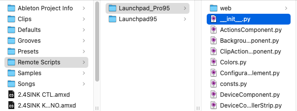

Ableton Live scripts for the Novation Launchpad Pro
Launchpad Pro95 is a modified version of Ableton Live's own script for the Novation Launchpad Pro. It keeps the same functionality and adds two step sequencers to edit MIDI clips (a drum one and a melodic one), an improved Note mode with scales, and an improved Device mode.
It does not need any external tool like Max for Live (M4L): it is a plain Live control surface script, written in Python.
For the other Launchpads, see Launchpad95.
Install
It needs Ableton Live 11 or later (any edition, macOS or Windows). For Live 9.5 and Live 10, use the archived release for older Lives.
- Unzip Launchpad_Pro95.zip and copy the Launchpad_Pro95 folder into the Remote Scripts folder of your Ableton User Library (create that folder if needed). Live shows where your User Library is in Settings → Library. Keep the folder name exactly
Launchpad_Pro95.
- Plug in the Launchpad Pro and start Live (restart it if it was running).
- Open Settings → Link, Tempo & MIDI (Preferences in Live 11). In a free Control Surface slot choose Launchpad_Pro95, and for its Input and Output the Launchpad Pro's Live port (Launchpad Pro (Live Port) on macOS).

- In the MIDI Ports list, turn on Track and Remote for the Launchpad_Pro95 input, and Track, Sync and Remote for its output.

What changed in each version: the change log.
User manual
Two modes are added on top of the existing modes: the drum step sequencer and the melodic step sequencer, to edit MIDI clips. They are sub modes of the User mode.
The Device mode has been vastly improved: you lose the parameter smoothing, but gain loads of other features. The Note mode has also been greatly improved.
Note mode
The top up/down navigation buttons navigate scenes, while the left/right buttons navigate tracks.
The matrix of buttons acts as a MIDI keyboard, with a drum rack layout and melodic layouts. Melodic layouts let you select the root note, the mode (major, minor, etc.) and the octave you play in.
| Scene+ | Scene- | Track- | Track+ | Session | Note | Device | Step | ||
| Shift | enter scale edition mode Scale |
||||||||
| Click | Octave+ | ||||||||
| Undo | Octave- | ||||||||
| Delete | |||||||||
| Quant. | Solo | ||||||||
| Dupl. | Mute | ||||||||
| Double | stop selected clip Stop |
||||||||
| Rec | start selected clip Start |
||||||||
| Arm | Select | Mute | Solo | Volume | Pan | Sends | Stop |
Scale edition mode
To enter scale edition mode, press the 1st scene button from Instrument mode.
- The top red buttons select the layout (drum rack, chromatic, diatonic).
- The 2nd and 3rd rows select the root note.
- The 4th red row selects the octave.
- The bottom rows select the mode.
You can select the orientation of the layout (vertical or horizontal).
The 2nd top left button selects the interval among 3rd, 4th and 6th for the diatonic layout. 4th is the default, as on Push; 3rd is very practical to play chords vertically.
The 3rd top left button (amber) lets you fix the first (bottom left) note to the scale root or leave it on a C.
| Scene+ | Scene- | Track- | Track+ | Session | Note | Device | Step | ||
| Shift | orient. | chromatic guitar | diatonic sequent | diatonic 3rd | diatonic 4th | chromatic | drumrack | enter scale edition mode Scale |
|
| Click | C# | D# | relative scale | F# | G# | A# | 5th left | quick scale mode | Octave+ |
| Undo | C | D | E | F | G | A | B | 5th right | Octave- |
| Delete | -2 | -1 | 0 | 1 | 2 | 3 | 4 | 5 | |
| Quant. | Major | Minor | Dorian | Mixolyd. | Lydian | Phrygian | Locrian | Diminish. | Solo |
| Dupl. | Whole-half | Whole Tone | Minor Blues | Minor Penta. | Major Penta. | Harmonic Minor | Melodic Minor | Super Locrian | Mute |
| Double | Bhairav | Hunga. Minor | Minor Gypsy | Hirojoshi | In-Sen | Iwato | Kumoi | Pelog | stop selected clip Stop |
| Rec | spanish | IonEol | start selected clip Start |
||||||
| Arm | Select | Mute | Solo | Volume | Pan | Sends | Stop |
Device Controller mode
Navigation
Navigate among tracks and devices with the top left navigation buttons.
Editing parameters
You can edit eight parameters of the selected device on the selected track at once, one parameter per column. Navigate the banks of parameters with scene buttons 2 and 3. Depending on the type of parameter, the Launchpad displays it in different ways.
- On/off parameters
- Colour code red. Only one button is used to change the parameter.
- Parameters with a list of values
- Colour code amber, for example a synth's wave form selector (square, sine, triangle). If the parameter has less than 8 values, they are directly accessible one by one. If it has more, you scroll through the values: the closer the button to the centre, the more precise; the closer to the top or bottom of the Launchpad, the bigger the change at each press.
- Parameters with continuous values
- Colour code green, for parameters like volume or panning. By default the Launchpad displays the parameter like a volume slider in the mixer mode. In the precision slider mode (scene button 4), the sliders work like the parameters with a list of values.
Locking to devices
You can save up to 4 devices on the 4 bottom scene buttons. When no device is saved there, the button is pink. To save a device, select it, then press one of the 4 last scene buttons for more than half a second: the button turns red, your device is saved. Recall it at any time with a short press on the scene button. To forget it, long press the button again.
| Device+ | Device- | Track- | Track+ | Session | Note | Device | Step | ||
| Shift | On/Off | ||||||||
| Click | Bank+ | ||||||||
| Undo | Bank- | ||||||||
| Delete | Precision | ||||||||
| Quant. | Lock1 | ||||||||
| Dupl. | Lock2 | ||||||||
| Double | Lock3 | ||||||||
| Rec | Lock4 | ||||||||
| Arm | Select | Mute | Solo | Volume | Pan | Sends | Stop |
Drum step sequencer
This sequencer has two layouts, detailed below: drum rack and multinote. (The second step sequencer, the melodic one, is detailed further down.)
Press the User button to cycle through its sub modes: the drum step sequencer is active when the User button is mint, the melodic step sequencer when it is orange, and the plain User mode when it is dark blue.
A playback indicator scrolls through the grid in amber to show the playing position of the clip while it plays. It is only an overlay: it does not change what the buttons do.
The colour codes:
- Normal notes are green, their intensity depending on their velocity.
- Muted notes are white.
- Notes being played flash in red.
- Notes being played outside the displayed block of the clip also flash in red.
Some other information is displayed in orange:
- Note markers show which row is which note: the root note of the scale is marked by three orange buttons lit on the left, the other notes of the scale by one orange button on the left-most column.
- While you scroll left and right along the clip, a vertical bar shows where you are in the clip.
Since the Live 11 versionEntering a step sequencer no longer changes the clip: its loop stays as it is, and the sequencer keeps the quantization you chose last time.
Drum rack layout
The bottom left area selects the note being edited in the note editor at the top.
The bottom right area selects the part of the clip that is displayed (single press) and edited (double press, or one button after the other).
Some buttons have combined functions:
- Lock (last scene button):
- long press to switch between clip lock and "play clip on locked track" mode;
- yellow: track lock mode, the step sequencer is locked to the current track and follows the clip playing on it;
- red: the step sequencer is locked to the current clip.
- Mute (7th scene button):
- hold mute and press a note to mute it;
- hold mute and press a note in the bottom left quadrant to mute it;
- hold mute and select a loop range in the loop selector to delete it.
- Velocity:
- hold velocity and press a note to change its velocity;
- hold velocity and press a note in the note selector to hear a preview of the sound;
- hold velocity and select a loop range in the loop selector to extend the original clip content to the newly selected length.
| Device+ | Device- | Track- | Track+ | Session | Note | Device | Step | ||
| Shift | Scale | ||||||||
| Click | octave+ | ||||||||
| Undo | Octave- | ||||||||
| Delete | Quant | ||||||||
| Quant. | Velocity | ||||||||
| Dupl. | mode | ||||||||
| Double | mute | ||||||||
| Rec | Lock | ||||||||
| Arm | Select | Mute | Solo | Volume | Pan | Sends | Stop |
Multinote layout
This layout of the drum step sequencer uses the grid as an 8 × 8 matrix, one MIDI note per row. It follows the selected scale.
| Device+ | Device- | Track- | Track+ | Session | Note | Device | Step | ||
| Shift | Scale | ||||||||
| Click | octave+ | ||||||||
| Undo | Octave- | ||||||||
| Delete | Quant | ||||||||
| Quant. | Velocity | ||||||||
| Dupl. | mode | ||||||||
| Double | mute | ||||||||
| Rec | Lock | ||||||||
| Arm | Select | Mute | Solo | Volume | Pan | Sends | Stop |
Melodic step sequencer
To activate this mode, press the User button until it turns orange.
This mode behaves more like a hardware step sequencer. It uses the grid as a 7 × 8 matrix to edit note pitch, velocity, length and octave, one function per page. Of course the note pitches follow the selected scale.
The last row of the matrix is a page selector and works like the loop selector of the drum step sequencer.
Double press the pitch button to toggle between monophonic and polyphonic modes.
Since the Live 11 versionThe melodic step sequencer only rewrites the notes it shows. Muted notes, notes outside the scale rows or octaves it displays, and notes before the clip start stay in the clip untouched.
| Device+ | Device- | Track- | Track+ | Session | Note | Device | Step | ||
| Shift | Scale | ||||||||
| Click | octave | ||||||||
| Undo | pitch | ||||||||
| Delete | Quant | ||||||||
| Quant. | Velocity | ||||||||
| Dupl. | Length | ||||||||
| Double | random | ||||||||
| Rec | Lock | ||||||||
| Arm | Select | Mute | Solo | Volume | Pan | Sends | Stop |
F.A.Q.
- 1. Which Launchpads are supported?
- The Launchpad Pro. For all the other Launchpads, see Launchpad95.
- 2. Which Ableton Live versions are supported?
- Live 11 or later, on macOS or Windows, any edition (Intro, Standard, Suite). For Live 9.5 and Live 10, use the archived release. Ableton changes Live's Python API from time to time without notice, so Launchpad Pro95 may stop working after a Live update: then download the latest release.
- 3. Where should I put the script?
- In the Remote Scripts folder of your Ableton User Library (see Install; Settings → Library shows where the User Library is). Inside Remote Scripts you should have a folder called
Launchpad_Pro95, and inside it a bunch of.pyfiles (Live compiles them into a__pycache__folder when it starts). The screenshot in Install shows how it looks. - 4. I installed everything, but the Launchpad does not light up when I select Launchpad_Pro95 in the settings. What is wrong?
- It is hard to guess; something in the install went wrong. Try again from scratch: download the latest release, unzip, install, restart Live. Things to check:
- that you installed it in the right place (question 3);
- the folder name, and its full path (question 3 again);
- the Input and Output of the control surface: the Launchpad Pro's Live port (Install);
- how many versions of Live you have installed, and which one you are running: it must be Live 11 or later.
- 5. I installed everything, but Launchpad_Pro95 does not appear in the Control Surface list. What is wrong?
- See question 4.
- 6. Note feedback does not work in the instrument mode.
- Make sure Track is on for the Launchpad Pro's input and output in Live's MIDI Ports list.
Known issues
- In Live 9 (the archived release), moving notes in the clip editor while the step sequencer is open duplicates notes.
Credits
Launchpad Pro95 is by w0ts, with contributions from boblemarin, marctdt, jefffm and John. It is not affiliated with Novation or Ableton.